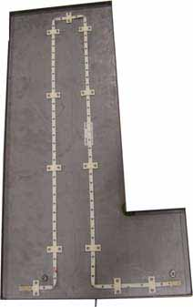

- 00000018WIA30BEE030GYZ
- id_123740371.11
- Dec 11, 2024 6:01:37 PM
Leak Sensor Strip Replacement
Prerequisites
| Personnel requirements | |||
|---|---|---|---|
| Required persons | Preliminary requirements | Procedure | Finalization |
| 1 | - | 40 minutes per tray | - |
| Tools and test equipment | |||
|---|---|---|---|
| Item | Quantity | Part number | Manufacturer |
| Standard Tool Kit | 1 | - | - |
| Replacement parts | |||
|---|---|---|---|
| Item | Quantity | Part number | Manufacturer |
| Leak Sensor Strip Kit | 1 |
5266125 | - |
About this task
Overview
This document covers replacing leak sensor strips on the following components:
-
Right PDU leak sensor tray (Right PDU Leak Sensor Tray)
-
Left PDU leak sensor tray (Left PDU Leak Sensor Tray)
-
XGD leak sensor tray (PDU and XGD Leak Sensor Tray)
-
RF leak sensor tray (RF Leak Sensor Tray)
Right PDU Leak Sensor Tray
Removing Leak Sensor Strip
Procedure
Installing Leak Sensor Strip
Procedure
- Start routing the new leak sensor strip approximately 1 inch
from the right edge of the tray. Seat the strip so that the first
and second open wire holes fall on either side of the retainer.Note
When routing this leak sensor strip, it does not matter which end is used. The ends are interchangeable.
Figure 4. Properly Seated Leak Sensor Strip 
Before tightening, be sure all retainers lay properly on top of the sensor strip with the retainer channels and sensor interlocking.
Figure 5. Properly Seated Retainer 
- Continue routing the sensor strip and retainers, making sure
that bends do not cause the open wire holes to cross each other.
Figure 6. Bending Leak Sensor Strip 
Figure 7. Fully Routed Leak Sensor Strip 
Left PDU Leak Sensor Tray
About this task
This procedure takes 45 minutes from beginning to finalization.
Removing Leak Sensor Strip
Procedure
- Remove all 12 retainers holding the leak sensor strip to the
tray.
Figure 9. Remove 12 Retainers  Note
NoteThe sensor is folded at the corners. This configuration will be repeated during installation of the new sensor strip.
Installing Leak Sensor Strip
Procedure
PDU and XGD Leak Sensor Tray
About this task
This procedure takes about 25 minutes from beginning to finalization.
Removing Leak Sensor Strip
Procedure
- Remove the two screws holding the XGD leak sensor tray to the
base of the cabinet.
Figure 11. Remove XGD Leak Sensor Tray Screws 
Installing Leak Sensor Strip
Procedure
- Start routing the new leak sensor strip approximately 3 inches from the right
edge of the tray, with the grey connector to the right
side. Seat the strip so that the first and second open wire holes fall on either side of the retainer.
Figure 12. Routing Leak Sensor Strip 
Be sure the retainer lays properly on top of the sensor strip before tightening. See Properly Seated Retainer.
RF Leak Sensor Tray
Removing Leak Sensor Strip
Procedure
Installing Leak Sensor Strip
Procedure
- Start routing the new leak sensor strip clockwise approximately
1 inch from the left edge of the tray. Seat the strip so that the
second and third open wire holes fall on either side of the retainer. Note
When routing this leak sensor strip, it does not matter which end is used. The ends are interchangeable.
Figure 15. Routing the Leak Sensor Strip 
Be sure the retainer lays properly on top of the sensor strip before tightening. See Properly Seated Retainer.
- Continue routing the leak sensor strip and retainers, making
sure that bends do not cause the open wire holes to cross each other.
See Bending Leak Sensor Strip.
Figure 16. Fully Routed Leak Sensor Strip 
Finalization
Finalization
Remove LOTO from the PDU. See Removing LOTO - PGR Power Distribution Unit (PDU)/Gradient Subsystem.